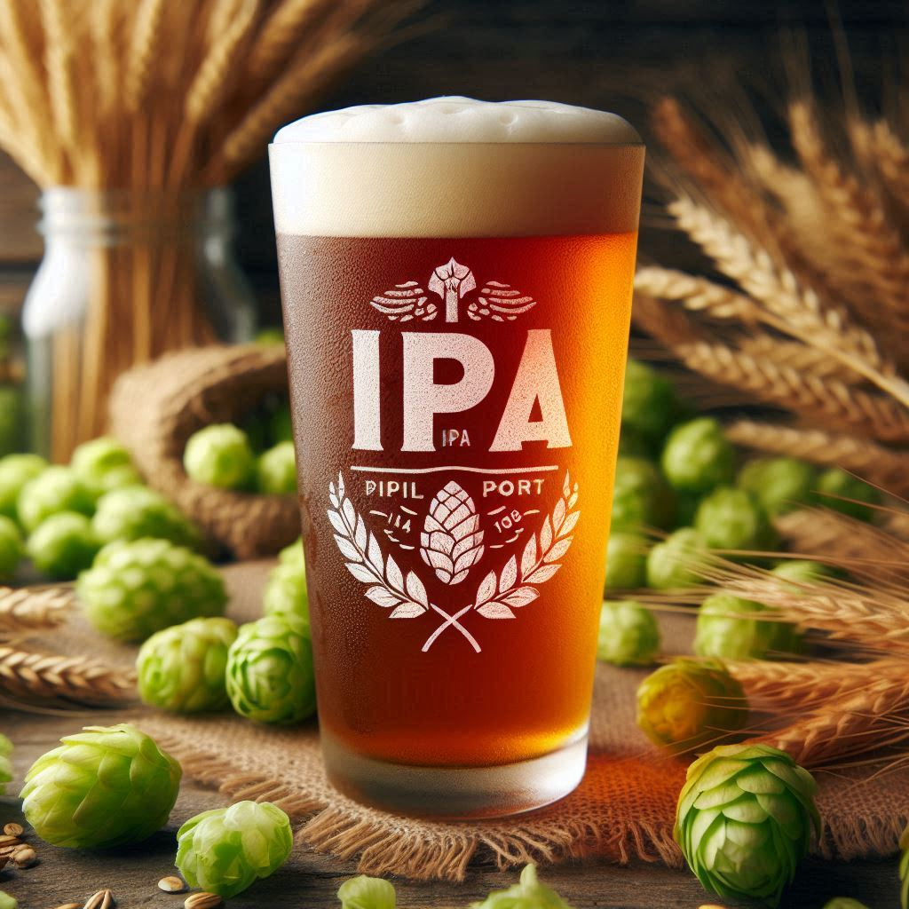

IPA
La India Pale Ale (IPA) es un estilo de cerveza que se caracteriza por su alto contenido de lúpulo. Se originó en Inglaterra en el siglo XIX y se popularizó en los Estados Unidos en la década de 1980. La IPA generalmente tiene un color ámbar o dorado, aunque también puede ser más oscura. Su sabor es amargo y afrutado, con notas cítricas y florales. La IPA es una cerveza muy aromática y refrescante, ideal para los amantes del lúpulo.
Tipo: IPA
Graduacion alcoholica: 4°
Amargor: Fuerte
Precio: $2500